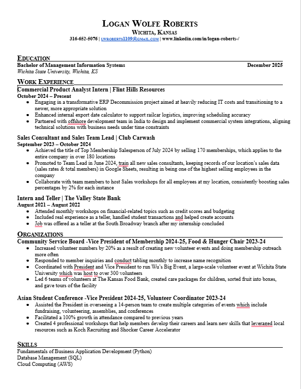

Hello, I am Logan Roberts — a Management Information Systems student at Wichita State University, graduating in December 2025.
I currently work as a Product Analyst Intern at Flint Hills Resources and am looking to acquire a broader skillset in Information Technology, so I'm learning web design!
Some of my hobbies include running, reading, cleaning my apartment, and playing sports with friends. I am far and beyond most passionate about running. I've ran multiple half marathons and am training for a full marathon in October 2025.
I'm planning on using this website as a fun side project when I'm not working or hobbying. Look out for updates and new features like: connecting my Strava statistics via Strava's user API, having a page that showcases all of my new running videos, and more(probably)
 I am a Management Information Systems student at Wichita State University, graduating in December 2025, with a strong background in business technology, data analysis, and systems integration. As a Commercial Product Analyst Intern at Flint Hills Resources, I have worked on a major ERP decommission project, enhanced logistics tools, and collaborated with offshore development teams to deliver commercial system integrations that align with business goals.
In previous roles, I have demonstrated leadership and performance in customer-facing environments. At Club Carwash, I was recognized as a top company-wide salesperson and later promoted to Team Lead, where I trained new consultants and helped boost team performance by implementing data tracking and workshops. I also gained foundational experience in financial services as a teller and intern at The Valley State Bank.
Beyond work, I am actively involved in student leadership. I currently serve as Vice President for both the Community Service Board and the Asian Student Conference, where I have led large-scale events, increased engagement, and developed career-focused workshops. I am also building my technical skills in Python, SQL, and AWS, and I bring a people-first, solution-driven approach to every opportunity I take on.